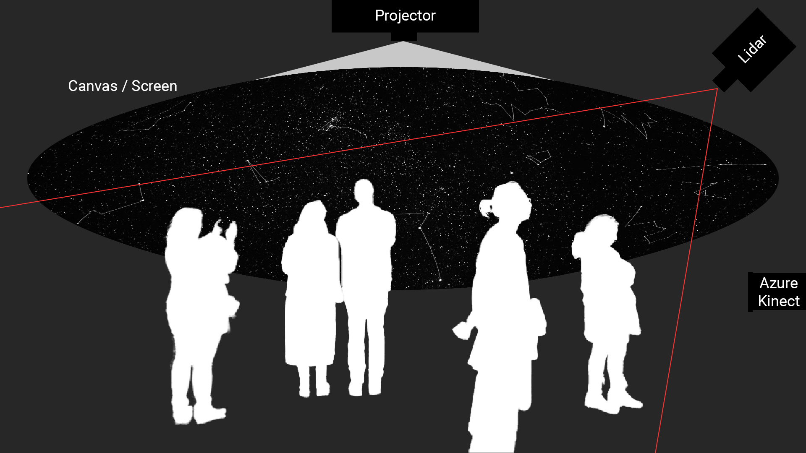
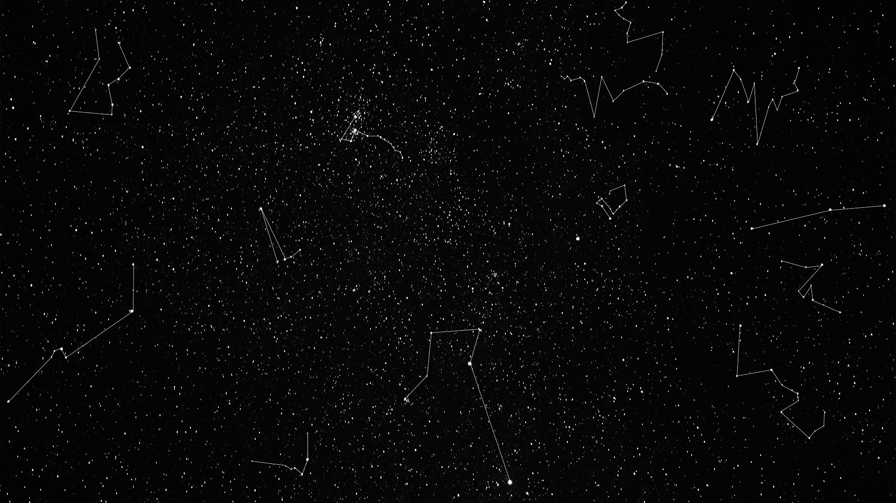
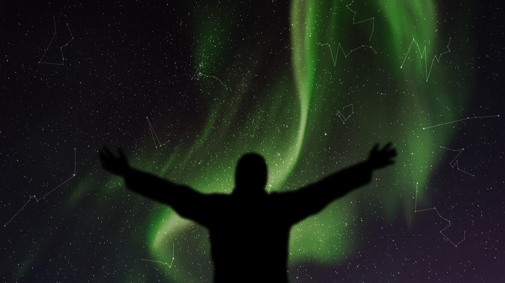

2. Final Project: Proposal

A starry night sky is projected onto the ceiling of a dark space. Depending on the position of the visitor in
the space, star constellations temporarily appear and reform when the visitors move. If a visitor stands in a
certain spot, they can then use their hands to paint northern lights on the sky.

In touchdesigner I plan to create the starry night sky with small white glowing circles that appear on random
positions and random sizes. I will track the positions of multiple people (Lidar?) and capture their coordinates
in certain time intervals. I will then convert this data into specific star constillations by connecting certain
stars with lines. To make them appear and disappear smoothly, I need to work with opacity transitions and
delays.

The painting of the northern lights could be realised with a blurry colorful brush that follows the controller's
hand. It only draws on the sky, when the controller does a painting gesture by pinching their index finger and
thumb together (like holding a pen). For this I need to track the positions of the painter's fingers, detect the
painting gesture and then spawn shapes on the tracked positions. The paintings of the northern lights will
slowly disappear after a while to clear the canvas for new painters. To realize this I will need to kill the
shapes after a certain time (delay, opacity). I also plan to let the painter control size (z-position) and color
(movement speed) of the brush.
Challenges: Location & Setup, Precise Tracking, Authentic Visuals